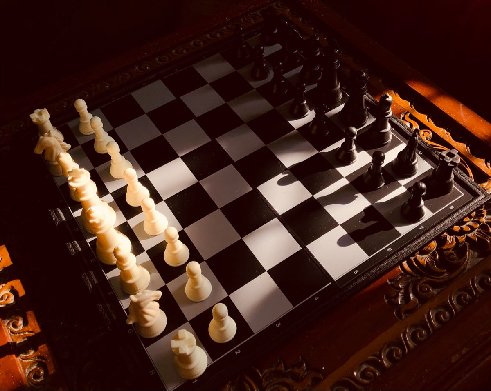

Chess originated from an ancient Indian game called Chaturanga, played in the Gupta Empire. It already featured pieces resembling today’s infantry, cavalry, elephants, and chariots.
Chaturanga evolved into Shatranj in Persia. Rules became more formalized, and several piece movements were modified. When the Arabs conquered Persia, they adopted the game.
The game spread across the Islamic world and into Europe mainly through Spain (Al-Andalus) and Italy. Early European chess still resembled Shatranj, with slower gameplay and weaker pieces.
This is when chess transformed into the modern, tactical game you know. Europe introduced powerful moves:
This is when chess transformed into the modern, tactical game you know. Europe introduced powerful moves.
Rise of legendary players and global rivalries: Capablanca, Alekhine, Botvinnik, Fischer, Spassky, Karpov, Kasparov. Chess became an international competitive sport with formal ratings and tournaments.
AI and engines like Stockfish and AlphaZero changed preparation forever. Online platforms (Chess.com, Lichess) made chess global and accessible, creating a new wave of players, speed formats, and streamers.